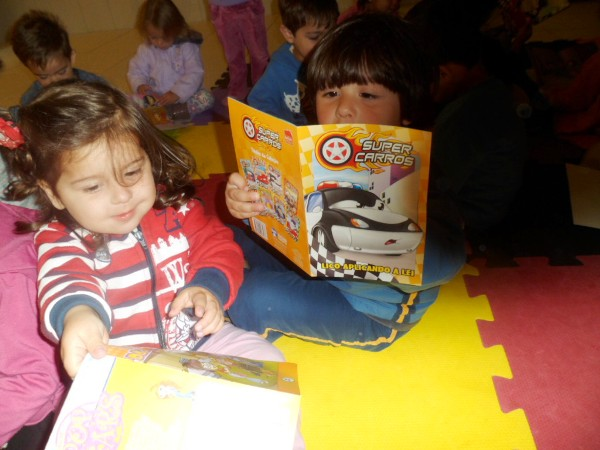
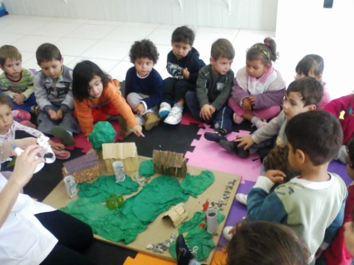

|
Neste semestre as professoras do Maternal I (2 a 3 anos), do CEI Professora Alcimar de Souza Vieira, LUCIANA ZIMMERMANN LOOK e MARY ELLEN ELIZAMA BUSQUIROLI DOS SANTOS estão desenvolvendo o projeto de literatura intitulado: LITERATURA INFANTIL NO MATERNAL: A Nave do conto e encanto. Neste projeto, as crianças estão tendo a oportunidade de conhecer novas histórias, desenvolver a oralidade, adquirir novos conhecimentos, ampliar seu universo imaginário, estreitar os laços de relações afetivas com o grupo e as professoras, entre tantos outros fatores. Dentre as atividades realizadas desde o início do semestre, estão maquetes, trabalho com texturas, pinturas, texto coletivo, plantio de mudas de flores, etc. Vale lembrar, que todas as atividades sempre vêm embasadas nas histórias que são contadas pelas professoras. Ao embarcarem na "NAVE DO CONTO E ENCANTO", nossos amigos mergulham na história e reproduzem dela aquilo que mais lhe chama a atenção. Quando ouviram a história dos três porquinhos, na roda da conversa, decidiram com as professoras, construir uma maquete com as casas dos porquinhos. Uma de palha, uma de madeira e uma de tijolo. Os materiais usados nas casas, são coletados pelos alunos e professoras no pátio da escola e nas imediações do espaço escolar. Já na coleta dos materiais, nossos amigos, com o auxílio das professoras, vão percebendo as cores, a textura, a densidade, os tamanhos, os odores, a composição, além de tantos outros conceitos importantes na construção dos conhecimentos necessários a esta faixa etária. E depois do processo de construção, vem a avaliação, para saber se o projeto proposto alcançou os objetivos que o grupo pretendia alcançar. Cada experiência é registrada e depois traduzida em textos coletivos que são expostos no CEI para que os pais acompanhem como os filhos participaram daquela atividade. "É muito importante ler contar história para as crianças menores, pois nessa fase, em que estão aprendendo a falar e a se expressar oralmente, o momento de história contribui para ampliar o vocabulário e entrar no mundo da linguagem que se escreve." (Professora Luciana Zimmermann Look)  |